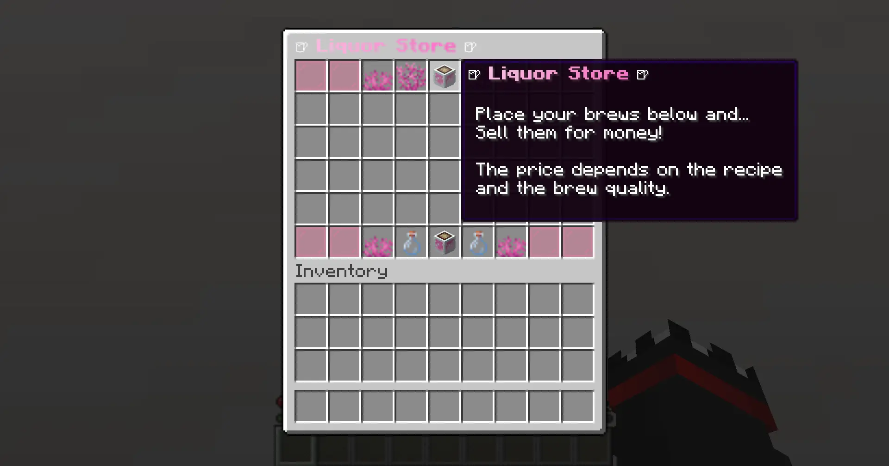

Icons & Items
Configure icon appearance using item data components.
Basic Structure
Every icon needs at minimum a material. All other fields are optional.
config.yml
title-icon:
symbol: 'T'
material: 'PLAYER_HEAD'
custom_name: '<gradient:#FCBDE3:#F973C4>Brew Market</gradient>'
lore:
- '<gray>Sell your finest brews!</gray>'
profile:
textures: 'eyJ0ZXh0dXJlcyI6...'

Data Components
| Component | Type | Description |
|---|---|---|
custom_name | String | Display name (MiniMessage) |
lore | List | Lore lines (MiniMessage) |
profile | Object | Head texture (textures key, Base64) |
enchantments | Map | Enchantment : level |
enchantment_glint_override | Boolean | Force/disable glint |
custom_model_data | Object | Resource pack data (floats, flags, strings, colors) |
item_model | String | Resource location for item model |
potion_contents | Object | Potion type and custom color |
tooltip_display | Object | Tooltip visibility control |
tooltip_style | String | Custom tooltip style |
profile
config.yml
profile: textures: 'eyJ0ZXh0dXJlcyI6eyJTS0lOIjp7InVybCI6Imh0dHA6...'
enchantments
config.yml
enchantments: minecraft:unbreaking: 3 minecraft:sharpness: 5
potion_contents
config.yml
potion_contents: potion-type: 'minecraft:strong_healing' custom-color: '#FCBDE3'
tooltip_display
config.yml
# Hide entire tooltip
tooltip_display:
hide-tooltip: true
# Or hide specific parts
tooltip_display:
hide-tooltip: false
hidden-components:
- 'potion_contents'
- 'enchantments'
custom_model_data
config.yml
custom_model_data:
floats:
- 1.0
strings:
- 'custom_variant'
Decorative Icons
Decorative icons fill the non-functional slots in your GUI layout — the ones marked with symbols like J, K, or L in market.layout. They are purely visual: players cannot interact with them, and they have no sell behavior. Their main purpose is to frame the item slots and sell buttons, making the market GUI look polished instead of leaving empty grey slots.
It is good practice to set hide-tooltip: true on decorative icons so players do not see a floating item name when hovering over them.
config.yml
decorative-icons:
pink-glass:
symbol: 'J'
material: 'PINK_STAINED_GLASS_PANE'
tooltip_display:
hide-tooltip: true
brain-coral:
symbol: 'K'
material: 'BRAIN_CORAL'
tooltip_display:
hide-tooltip: true
brain-coral-fan:
symbol: 'L'
material: 'BRAIN_CORAL_FAN'
tooltip_display:
hide-tooltip: true